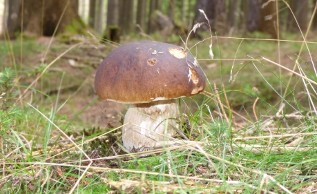

Kam se podívat?
Naše
krásná vesnička se nachází v malebné krajině uprostřed Kamenické
vrchoviny (nejvyšší vrchol - Velký kámen - 645 m). Možná bude
těžké si vybrat, kam se podívat dříve.
 |
 |
| Kamenný most v Bělé - polovina 17. století. | Lesy pod Hejkalovou horou jsou rájem každého houbaře.. |
 |
 |
| Tajemné Myslivcovo jezero. | Středověká kovárna severně od Mokrého Brlohu. |
Další náměty pro výlety hledejte pomocí intenetového vyhledávače.